Guide d'utilisation
Le Guide d'Utilisation de la ligne de commande se
trouve ici
Si
vous rencontrez des problèmes avec DeepSkyStacker, veuillez les signaler à la
liste de diffusion DeepSkyStacker hébergée sur groups.io
:
https://groups.io/g/DeepSkyStacker
Introduction
Démarrage rapide
L'onglet Enregistrement/Empilement
Empilement par lot
L'onglet Traitement
Créer un masque d'étoiles
La liste des images
La prévisualisation d'une image (et
édition des étoiles et comète)
Paramètres de développement des fichiers RAW et FITS
Introduction
L'objectif de ce guide est d'expliquer les principes d'utilisation et de
fonctionnement de DeepSkyStacker.
|
L'interface utilisateur de DeepSkyStacker est
simple et intuitive et les principales fonctionnalités et commandes sont
directement accessibles.
L'interface utilisateur est composée de deux zones :
Á gauche les différents onglets qui donnent accès à toutes les
fonctionnalités
Á droite un écran qui dépend de l'onglet courant et qui permet de
configurer et visualiser.
Pour changer d'onglet il suffit de cliquer
n'importe où dans l'onglet.
|
Si vous débutez en astrophotographie et que vous vous demandez ce que sont
les darks, flats et offsets et comment les obtenir vous avez une
petite explication ici. |
|
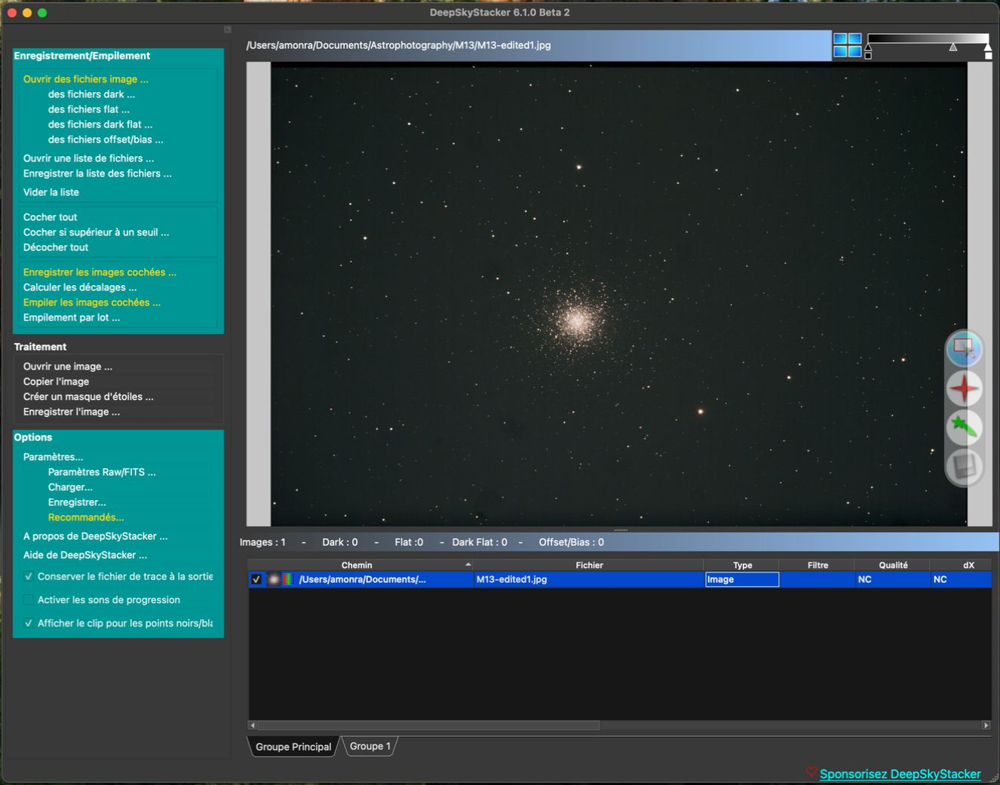 |
Démarrage rapide
Vous sortez d'une longue nuit et vous avez transféré sur votre PC
l'ensemble des images capturées (images, dark, offset, flat).
La première étape consiste à ajouter dans la liste les images correspondant à
chaque type.
Pour ce faire vous utilisez les différentes commandes situées dans la zone de
gauche :
- ajout des images
- ajout des darks
- ajout des flats
- ajout des offsets
Ensuite vous lancez l'enregistrement des images
et vous cochez la case "Empiler après l'enregistrement" après avoir
indiqué le pourcentage des images qui devront être conservées dans le processus
d'empilement après l'enregistrement.
Si vous utilisez des
fichiers RAW (ce qui est fortement
conseillé) vous vérifiez les paramètres de développement RAW et vous lancez le
processus d'enregistrement.
Vous pouvez enfin aller vous coucher et à votre réveil vous pourrez visualiser
dans l'onglet Traitement le résultat de l'empilement.
Notez que même si votre PC plante après le processus d'empilement le résultat
est enregistré automatiquement dans un fichier spécial :
AutoSave.tif.
L'onglet Enregistrement/Empilement
L'onglet Enregistrement/Empilement donne accès aux
fonctionnalités d'enregistrement et d'empilement.
Il permet d'ajouter les images de chaque type dans la liste,
d'enregistrer la liste de tous les fichiers, de charger une ou plusieurs
listes de fichiers enregistrées préalablement, de prévisualiser les images, de sélectionner les images et de lancer les
processus d'enregistrement et d'empilement.
|
Il est possible d'ajouter des fichiers à
la liste par simple glissé/déposé depuis l'explorateur de fichiers.
Le type de fichier sera demandé
préalablement à l'ajout dans la liste. |
La zone de droite est composée de la liste des images et
de la zone de prévisualisation des images.
En dessous de la liste des images se trouve
une série d'onglets, chaque onglet correspondant à un groupe de fichiers. En
cliquant sur un onglet les fichiers appartenant à ce groupe sont affichés
dans la liste.
Pour en savoir plus sur le fonctionnement des groupes de fichiers vous
pouvez consulter les détails techniques
ici.
En haut à droite se trouve un curseur qui
permet de modifier le gamma de l'image prévisualisée et en particulier à
l'éclaircir pour distinguer les objets faibles.
Bien entendu aucune modification n'est apportée à l'image réelle, il s'agit
juste d'un artifice de prévisualisation.
|
Il est possible de lancer automatiquement le processus d'empilement après le
processus d'enregistrement en précisant le pourcentage des images à conserver.
Les meilleures images en fonction du
score obtenu lors de l'enregistrement seront alors empilées. |
|
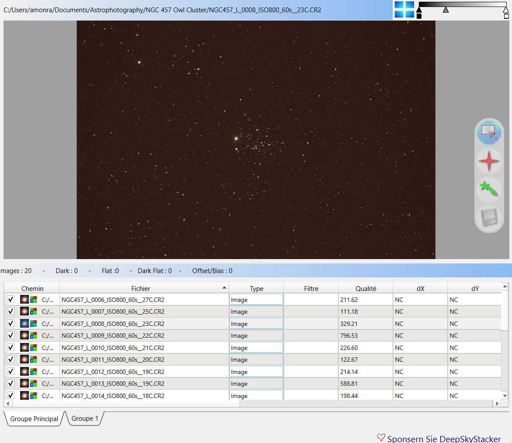 |
A noter
en particulier que la fonctionnalité "Calculs des décalages" permet de calculer sans
procéder à l'empilement les différents décalages et angles de rotation entre
les images. Une fois les décalages calculé, la liste des images est mise à jour
avec les valeurs de décalage dans les colonnes dX, dY et angle.
Il n'est pas nécessaire d'utiliser cette fonctionnalité avant de procéder à un
empilement, le calcul des décalages étant automatiquement effectué lorsque le
processus d'empilement est lancé.
La fonctionnalité "Cocher si supérieur à un seuil ..." permet de cocher toutes les images
dont le
score est supérieur à une valeur donnée.
|
Avant le démarrage du processus d'empilement un
écran récapitule les différentes étapes du processus.
En particulier les darks
vont être associés automatiquement aux images en fonction de la
sensibilités ISO et du temps de pose.
De même, les
flats et offset/bias seront associés en fonction de la sensibilité ISO.
Dans tous les cas la
meilleure correspondance possible va être proposée et un avertissement
indiquera lorsque les sensibilités ISO et/ou temps de pose ne
correspondent pas.
|
Il
est possible de "forcer" temporairement les temps de pose et les
sensibilité ISO des images en utilisant le menu
contextuel des
images. |
Cet écran permet
également de modifier la méthode d'empilement pour chaque type d'image,
soit en cliquant directement sur le lien (en bleu) ou sur le bouton
"Paramètres d'empilement".
|
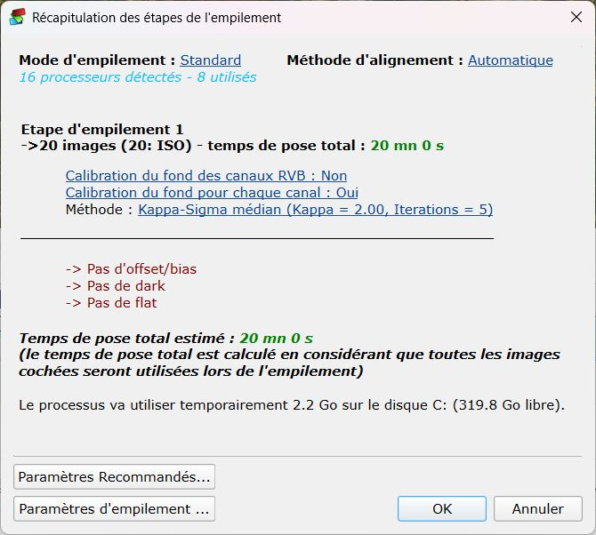
|
|
Dans tous les cas le dialogue ci-contre
apparaît et permet de modifier le répertoire dans lequel sont créés les
fichiers temporaires nécessaires au processus d'empilement ainsi que les
paramètres contrôlant le processus d'empilement.
Le premier onglet permet de contrôler le
mode d'empilement dont l'utilisation d'un rectangle personnalisé.
Il faut noter que dans tous
les cas les décalages sont calculés à partir de l'image de référence de la
pile contrairement à une vraie mosaïque.
C'est également sur cet onglet que vous
pouvez choisir d'utiliser un mode d'empilement Drizzle.
|
L'option Drizzle crée
des images 4 ou 9 fois plus grandes.
Pour des photos déjà importantes issues
d'appareils photo numériques les images résultantes peuvent être
très grandes et DeepSkyStacker peut avoir besoin de beaucoup de
mémoire et de place disque pour les
traiter. |
|
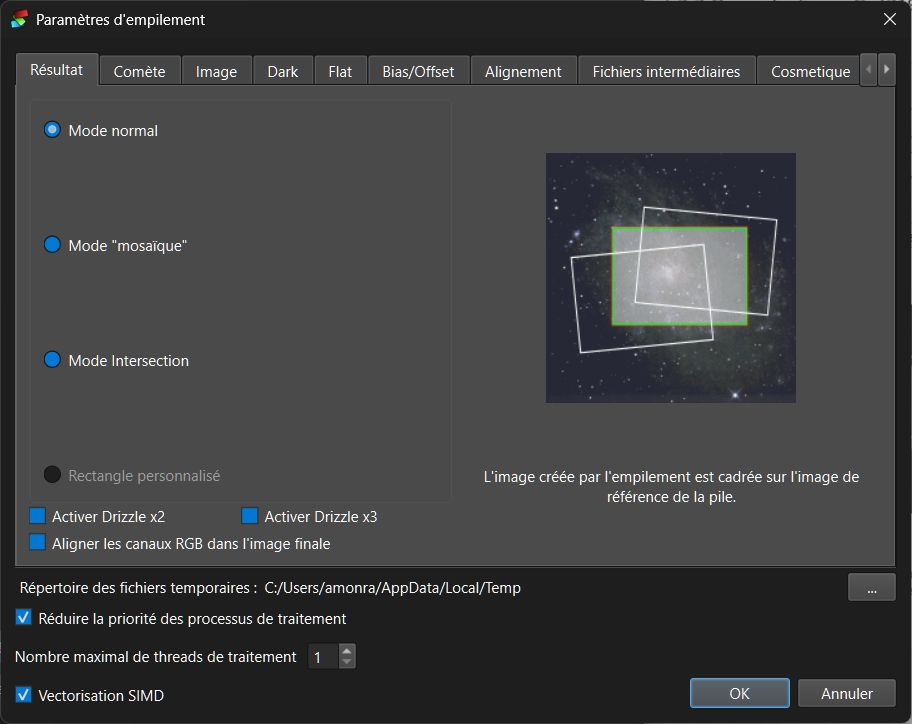
|
|
Les onglets Image, Dark, Flat et Offset
permettent de modifier les méthodes d'empilement associées à chaque type
d'image et en particulier activer ou désactiver l'option de calibration du fond des canaux RVB pour les
images ou la détection et la suppression des pixels chauds
et la détection et la suppression des mauvaises
colonnes pour les darks.
Si toutes vos images sont au format FITS et que leurs
en-têtes contiennent des données WCS (World Coordinate System) valides, la
case à cocher « Utiliser les données WCS FITS » permet de choisir
d'utiliser ou non ces données pour déterminer les décalages et la rotation
de l'image par rapport au repère de référence.
Si elle est cochée, les décalages et la rotation de
l'image par rapport au cadre de référence seront dérivés des données WCS,
ce qui est très rapide ; en revanche, si elle n'est pas cochée, les
décalages et la rotation seront calculés en comparant la position des
étoiles dans le cadre de référence et dans l'image actuelle, ce qui est
beaucoup plus lent. |
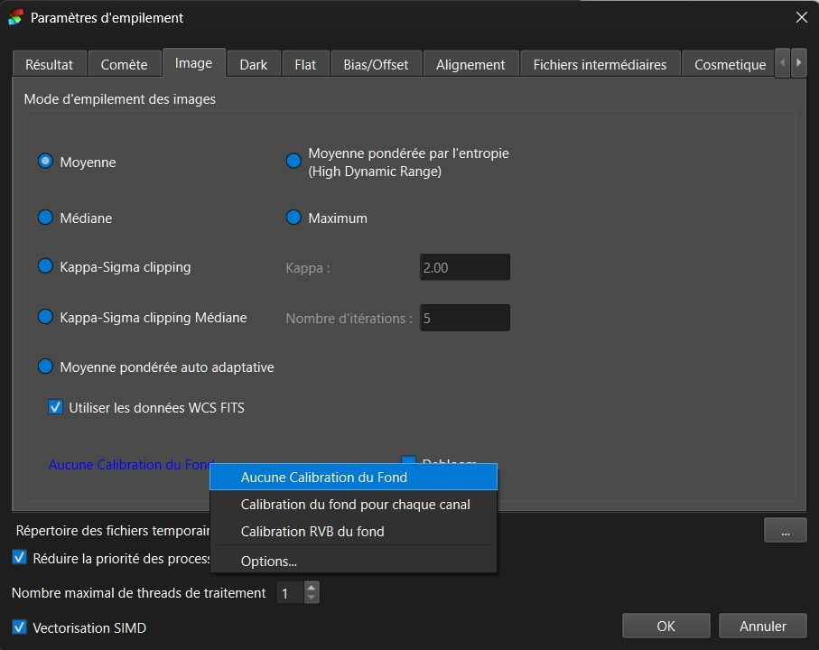
|
|
L'onglet Alignement permet de configurer la
méthode utilisée lors de l'alignement des images.
Vous pouvez choisir entre bilinéaire,
bicarrée et bicubique ou laisser DeepSkyStacker choisir la meilleure
méthode en fonction du nombre d'étoiles disponibles.
|
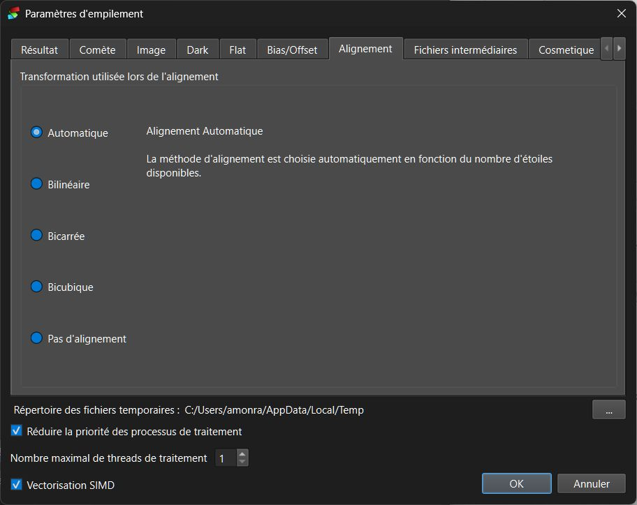
|
|
Cet onglet permet de contrôler la création
des fichiers intermédiaires.
Deux options permettent de créer les
fichiers contenant les images intermédiaires:
La
première permet de créer un fichier contenant l'image calibrée pour chaque
image brute.
La seconde
option de cet onglet permet de créer un fichier contenant l'image calibrée
et enregistrée pour chaque image brute.
Les fichiers créés se trouvent au même endroit que
l'image correspondante avec une extension .cal.tif ou .cal.fts pour les
images calibrées et .reg.tif ou .reg.fts pour les images enregistrées et
calibrées.
Il s'agit toujours d'un fichier TIFF
ou FITS non comprimé monochrome ou couleur, 8, 16 ou 32 bits en fonction
des caractéristiques de l'image brute.
|
Si vous cochez une des ces options assurez vous
que vous disposez de suffisamment d'espace libre sur votre disque
dur pour accueillir tous les fichiers
créés. |
|
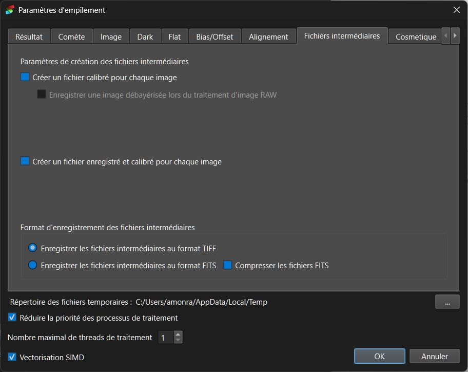 |
|
Cet
onglet permet de contrôler la façon dont les images calibrées sont
nettoyées avant l'empilement.
L'objectif est de détecter et nettoyer les pixels
chauds et froids résiduels après l'étape de calibration.
Attention, ces options peuvent sérieusement altérer
les images et il faut donc les utiliser avec précaution.
Deux paramètres sont nécessaires pour définir le
comportement du nettoyage cosmétique.
Le premier paramètre est la taille du filtre utilisé
pour détecter et corriger les pixels chauds/froids.
Plus le filtre est grand, plus le traitement est long
et plus l'image est adoucie.
Le second paramètre est le seuil en dessous duquel
aucune correction n'est effectuée (la veluer du pixel reste inchangée).
Un seuil bas signifie que davantage de corrections
sont effectuées.
La dernière option peut être cochée pour créer une
image qui montre pour chaque image quels sont les pixels nettoyés.
Dans cette image les pixels chauds nettoyés sont
blancs, les pixels froids nettoyés sont gris foncés et les pixels non
modifiés sont gris clair.
L'image créée porte le
nom de l'image brute avec une extension .cosmetic.tif ou .cosmetic.fts en
fonction de l'option sélectionnée dans l'onglet précédent.
|
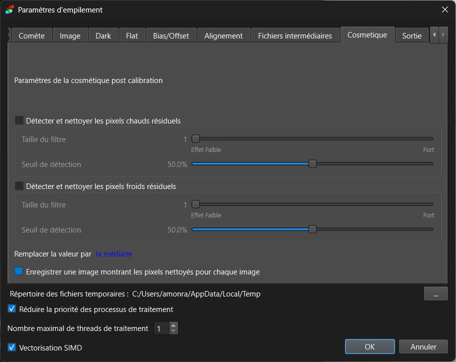 |
|
L'onglet
Comète est disponible dès que deux images brutes (y compris l'image de
référence) ont une comète enregistrée.
Dans ce cas l'onglet Comète est utilisé pour choisir
le mode d'empilement de la comète entre les trois modes disponibles.
Voir le paragraphe sur l'empilement d'images de comète dans les détails
techniques pour des informations complémentaires sur l'empilement d'images
de comète. |
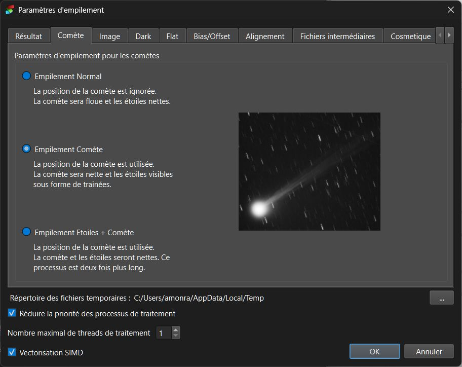 |
A l'issue
du processus d'empilement, le résultat est enregistré dans un fichier
AutoSave.tif dans le répertoire de l'image de référence.
Si un fichier Autosave.tif existe déjà, un fichier
Autosave001.tif (002, 003...) est créé.
Empilement par lot
L'empilement par lot est utilisé pour créer les images
résultantes de plusieurs piles en une seule opération.
|
Par exemple il peut être utilisé pour créer les
images résultantes des couches rouge, verte, bleue et luminance sans qu'il
soit nécessaire de charger les listes et lancer les traitements un par
un.
Bien entendu il peut
être également utilisé pour créer l'image résultante à partir de n'importe
quelle liste.
Vous avez
juste besoin d'ajouter des listes de fichiers préalablement créées à
la liste.
L'image résultante correspondant à
chaque liste de fichier sera créée.
A la fin du processus d'empilement le nom du fichier
contenant l'image résultat remplace le nom de la liste de fichier
correspondante.
Notes:
|
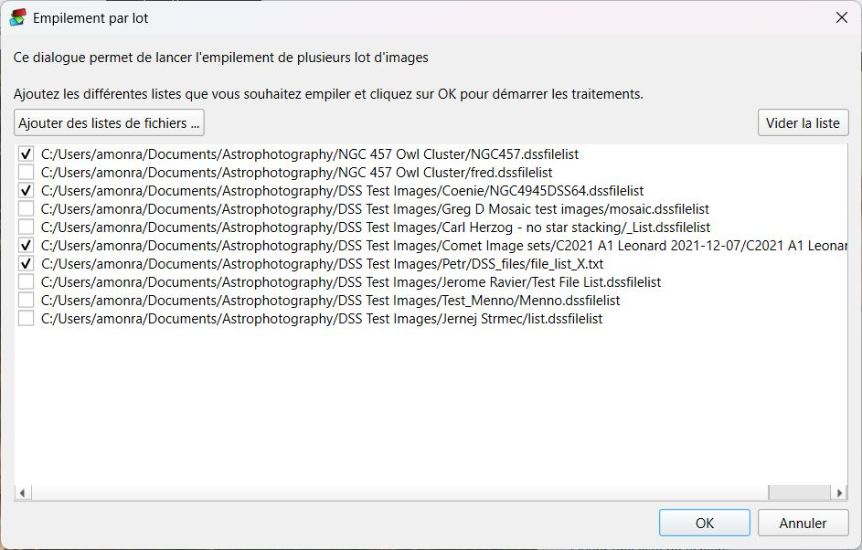 |
L'onglet Traitement
L'onglet Traitement donne accès aux fonctionnalités du
traitement.
|
Je tiens à préciser que DeepSkyStacker permet
uniquement étirement simple et ajustement de la balance des couleurs
de l'image afin de visualiser le résultat du processus
d'empilement. Toutefois, en l'absence de dégradé d'arrière-plan, il est
possible d'obtenir un résultat tout à fait acceptable avec les seuls
outils fournis.
Tout post-traitement complexe doit être effectué avec un
logiciel dédié.
L'onglet « Traitement » contient un aperçu de
l'histogramme RVB, un onglet permettant d'appliquer un étirement d'image
par la méthode ASinH (Inverse Hyperbolic Size) et un autre permettant
d'ajuster la balance des couleurs.
Pour ajuster la balance des couleurs, commencez par
modifier les paramètres d'étirement et appliquez-le, puis accédez à
l'onglet « Balance des couleurs », effectuez vos ajustements et
appliquez-les.
|
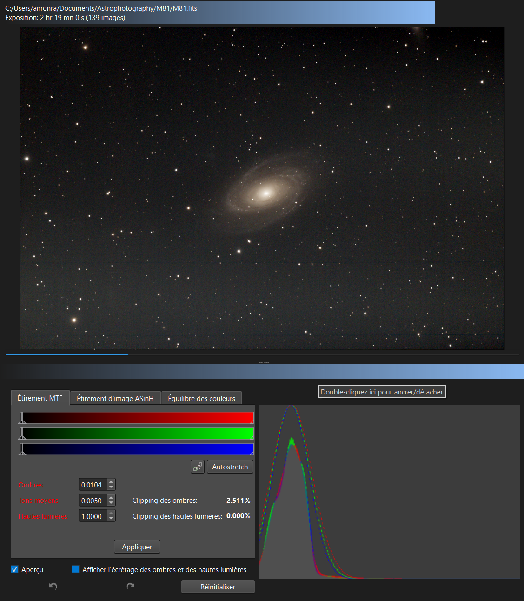 |
|
La transformation de la
fonction de transfert des tons (MTF) moyens ou
Étirement
La transformation MTF (ou étirement) est l'un des
outils d'étirement d'image les plus puissants qui soient.
Cet outil se présente sous la forme de trois curseurs
pour chaque couleur primaire, que l'on peut déplacer pour transformer
l'image. Si le bouton « lien » (à gauche du bouton « Étirement
automatique ») est réglé sur « lié », les curseurs des trois couleurs sont
liés entre eux ; s'il est réglé sur « non lié », les curseurs de chaque
couleur sont indépendants.
Le curseur de gauche s'applique au signal des ombres,
celui du milieu permet de régler l'équilibre des tons moyens et celui de
droite ajuste les hautes lumières. Les valeurs de ces curseurs
s'affichent sous les curseurs, à gauche de l'onglet, sous forme de zones
de saisie liées aux réglages des curseurs. Vous pouvez
modifier directement les valeurs dans les zones de saisie, ou utiliser les
touches Page précédente et Page suivante pour des modifications
approximatives, ou les touches fléchées haut et bas pour des modifications
plus précises.
Si les curseurs sont liés, le texte situé à gauche
des champs de saisie s'affiche dans la couleur « texte »
standard. S'ils ne sont pas liés, la couleur du texte
correspond à la couleur principale pour laquelle les réglages sont
actuellement actifs.
À droite des champs de saisie s'affiche le
pourcentage de pixels écrêtés par la transformation, car l'objectif est
idéalement de réduire au minimum l'écrêtage généré par
celle-ci.
Le curseur « Ombre » (à gauche) définit le point de
coupure noir qui vous permet d'assombrir l'arrière-plan de l'image en
coupant l'extrémité gauche de l'histogramme, supprimant ainsi le bruit du
capteur et établissant un véritable point noir. En faisant
glisser légèrement ce curseur vers la droite ou en utilisant la zone de
saisie « Ombres » pour augmenter le réglage, vous assombrirez
l'arrière-plan de l'image. N'en abusez pas, car vous
risqueriez de perdre les nébulosités légères ou les détails des
ombres.
Le curseur d'équilibre des tons moyens contrôle la
fonction MTF qui fait correspondre les valeurs de pixels d'entrée x
(comprises entre 0 et 1) à des valeurs de sortie y.
Elle s'exprime mathématiquement comme suit :
(m - 1)x
y = -------------
(2m - 1)x - m
où m correspond à la valeur du curseur d'équilibrage
des tons moyens.
-
m = 0,5 : laisse les tons moyens de l'image
inchangés (fonction identité).
-
m < 0,5 : éclaircit les tons moyens
(décale la courbe vers la gauche).
-
m > 0.5 : Assombrit les tons moyens
(décale la courbe vers la droite).
Le curseur de droite ou la zone de saisie «
Highlights » permet de définir le point blanc.
En plus des réglages manuels décrits ci-dessus, il
existe un bouton « Autostretch ». Son comportement varie légèrement en
fonction du bouton « link » (situé juste à gauche du bouton « Autostretch
»). Lorsque « linked » est activé, les statistiques de l'image
utilisées pour calculer les paramètres d'étirement à appliquer sont
calculées comme une moyenne sur les trois canaux, ce qui permet de
préserver la balance des couleurs existante.
Lorsque « linked » est désactivé, les statistiques
sont calculées canal par canal, ce qui signifie que les canaux de couleur
sont étirés indépendamment, ce qui entraîne une neutralisation implicite
de l'arrière-plan qui tend à supprimer les dominantes de
couleur.
Enfin, il est possible de régler les paramètres
utilisés pour le calcul de l'étirement automatique en cliquant avec le
bouton droit de la souris sur le bouton « Autostretch ». Ces
paramètres contrôlent le niveau de non-linéarité appliqué par le processus
d'étirement automatique.
Le paramètre « Target Background » définit la
luminosité médiane du ciel en arrière-plan après l'étirement. La
plage théorique est comprise entre [0,0 et 1,0], la valeur par défaut
étant 0,125. Vous devriez probablement définir une valeur comprise
entre 0,125 et 0,25 pour obtenir un résultat acceptable.
Le paramètre Shadow Clipping contrôle à quelle
distance en dessous de la médiane le point noir doit être défini. La
valeur est exprimée en unités de déviation absolue médiane (MAD), qui est
une mesure statistique robuste de la variabilité des données.
Contrairement à l'écart-type, qui est très sensible aux valeurs extrêmes,
la MAD mesure la distance typique par rapport à la médiane et est
totalement insensible aux valeurs aberrantes.
Si la case « Aperçu
» est cochée (réglage par défaut), lorsque vous modifiez les paramètres
(en saisissant directement des valeurs dans les champs de saisie, ou en
sélectionnant le champ de saisie ou le curseur et en utilisant les touches
Page précédente et Page suivante pour des ajustements grossiers, ou les
touches fléchées haut et bas pour des ajustements plus précis), l'image et
l'histogramme affichés s'actualisent pour refléter ces
modifications. Toutefois, pour que les modifications soient
effectivement appliquées, vous devez cliquer sur le bouton « Appliquer
». |
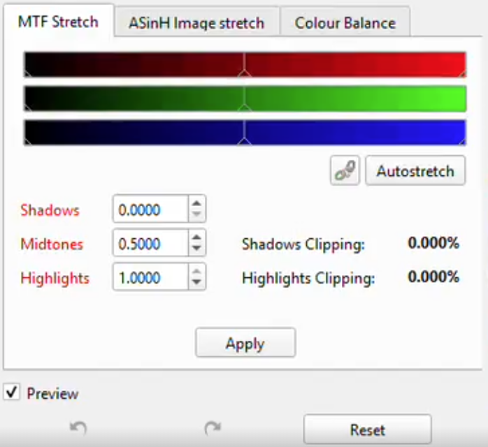 |
|
La transformation ou l'étirement
ASinH
La transformation ASinH amplifie les
zones sombres de l'image. Ses paramètres sont le facteur d'étirement (ou bêta), la
valeur du point noir et l'utilisation ou non de la « luminance
pondérée humaine ».
Pour les images monochromes, les
valeurs des pixels sont modifiées à l'aide de la fonction
suivante :
-----------------------------------------------------
original × asinh(étirement)
Pour les images couleur,
la fonction devient :
---------------------------------------------------------
rgb_original × asinh(étirement)
Le facteur d'étirement (ou bêta) peut prendre des valeurs
comprises entre 0,0 et 1000,0. Plus sa valeur est élevée, plus l'étirement de l'image est
important.
La valeur du « point noir » est comprise entre
0.0000 et 0,20000. La valeur 0,2 indique que le point noir est fixé à
20 % de la valeur ADU maximale possible. Les valeurs inférieures au point noir sont considérées
comme noires.
Comme rgb_original est une moyenne des trois canaux de
couleur, il est possible qu'une ou deux valeurs de canal soient
supérieures à rgb_original et entraînent donc une
saturation. Pour pallier ce problème, l'algorithme de fusion RGB
(développé par les auteurs de l'outil GHSAstro pour ajuster le
« gain » appliqué aux canaux) est utilisé afin d'éviter cette
saturation.
Lorsque l'option « Luminance pondérée par
l'humain » n'est pas activée, rgb_original correspond à la moyenne
des trois valeurs de pixels. Une fois ce paramètre défini, la pondération passe à
0,2126 pour le rouge, 0,7152 pour le vert et 0,0722 pour le bleu, ce qui
permet d'obtenir un rendu des couleurs plus proche de la perception
humaine.
Si la case « Aperçu » est cochée (paramètre par
défaut), l'ajustement des paramètres (en modifiant directement les champs
numériques, ou en sélectionnant le champ numérique ou le curseur et en
utilisant les touches Page précédente et Page suivante pour les
modifications grossières, ou les flèches haut et bas pour les
modifications plus fines) mettra à jour l'image et l'histogramme
affichés. Pour appliquer les modifications, il faut cliquer sur le
bouton « Appliquer ».
Notez que l'étirement est multiplicatif : si vous
appliquez un étirement de 200,0, puis un autre de 10,0, l'étirement
effectif de l'image sera de
2000,0. |
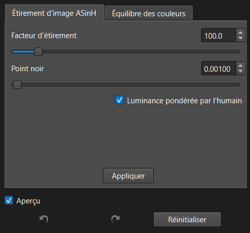 |
|
Histogramme
RVB
L'histogramme RVB permet de
visualiser la distribution des valeurs de pixels pour chaque canal (R, G,
B) de l'image.
De plus, une courbe
gaussienne est tracée en superposition sur les données de l'histogramme
pour chaque canal.
Vous pouvez utiliser
l'onglet Balance des couleurs (voir ci-dessous) pour ajuster la balance
des couleurs de l'image ; l'histogramme sera alors
redessiné. |
 |
|
Réglage de la balance des
couleurs
L'onglet Balance des couleurs permet
d'ajuster la balance des couleurs de l'image. Il est conseillé d'effectuer ce réglage après tout
étirement de l'image.
Si la case Aperçu est cochée (paramètre par défaut),
l'image et l'histogramme affichés se modifieront en fonction des
changements de balance des couleurs (en sélectionnant le curseur approprié
et en utilisant les touches Page précédente et Page suivante pour les
modifications grossières, ou les flèches directionnelles pour les
modifications plus fines). Toutefois, comme pour l'étirement de l'image, vous devez
cliquer sur le bouton Appliquer pour appliquer les
modifications. |
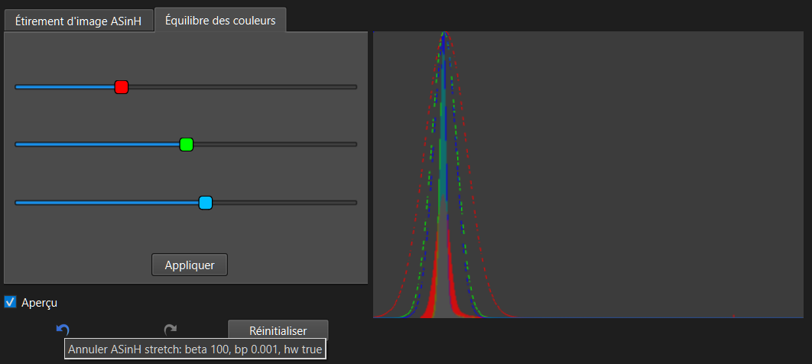 |
Paramètres de réglage
Annuler/Rétablir
En bas de chaque onglet, vous trouverez des
boutons :
-
Appliquer les dernières modifications à
l'image
-
Annuler les dernières modifications
appliquées
-
Rétablir les dernières modifications
annulées
-
Réinitialiser toutes les
valeurs
Chargement d'une
image
DeepSkyStacker peut charger des images TIFF (8, 16 et
32 bits ; monochrome ou RVB) ou des images FITS (8, 16, 32 et
64 bits ; monochrome ou RVB). À la fin du processus d'empilement, l'image résultante est
chargée automatiquement.
Enregistrement de l'image
résultante
|
DeepSkyStacker permet d'enregistrer l'image résultante aux
formats TIFF ou FITS 16 ou 32 bits selon deux
méthodes :
-
Appliquer les modifications : cette méthode
enregistre l'image en tenant compte des modifications apportées à l'aide
du bouton « Appliquer ». Il est recommandé d'utiliser cette méthode si vous
prévoyez d'effectuer des retouches ultérieures dans un autre
logiciel.
-
Ne pas appliquer les modifications : cette méthode
enregistre l'image sans tenir compte des modifications apportées à
l'aide du bouton « Appliquer ». Il est recommandé d'utiliser cette méthode si vous
prévoyez d'effectuer tout le post-traitement dans un autre
logiciel.
|
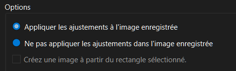 |
Pour en
savoir plus, voir la faq concernant le mécanisme d'enregistrement.
Créer un masque d'étoile
L'utilisation d'un masque d'étoile est souvent très utile
lors des post-traitements pour appliquer des traitements différents aux étoiles
et au reste de l'image.
La fonctionnalité "Créer un
masque d'étoiles" peut être utilisée pour créer plusieurs types de masques qui
peuvent ensuite être utilisés dans le logiciel que vous utilisez pour les
post-traitements (Photoshop, PixInsight, ...).
DeepSkyStacker ne
fait que créer des fichiers contenant des masques d'étoiles. Il ne les utilise
pas lui même.
Vous pouvez voir cette
fonctionnalité comme un outil dont l'objectif est de permettre simplement et
rapidement de créer des masques d'étoiles basés sur une vraie détection des
étoiles.
|
Qu'est-ce qu'un masque d'étoiles
?
Un masque d'étoile est
une image en niveau de gris dans laquelle chaque étoile suffisamment
brillante est remplacée par une zone ronde et blanche au centre et
noire à l'extérieur et dont la variation de luminosité suit une courbe.
Vous pouvez voir un exemple
de masque d'étoile à droite.
Passez la souris sur
le texte pour voir l'image ou le masque
d'étoile. |

Image
|
|
Création d'un masque
d'étoiles
Pour créer un masque d'étoiles vous
devez d'abord charger une image dans l'onglet traitement.
Ensuite il suffit de cliquer sur le menu "Créer un
masque d'étoiles..." ce qui ouvre le dialogue ci-contre.
Celui-ci vous permet de changer la forme des étoiles
dans le masque, le seuil de détection des étoiles ainsi que quelques
autres paramètres.
Une fois les paramètres définis, après avoir cliqué
sur le bouton OK DeepSkyStacker vous demandera dans quel fichier vous
souhaitez enregistrer le masque d'étoile (ce peut être un fichier TIFF ou
un fichier FITS).
L'image enregistrée est toujours une image en niveau
de gris et en 16 bits. Elle n'est pas automatiquement chargée par
DeepSkyStacker.
Le masque d'étoile est toujours créé à partir de
l'image telle que vous la voyez dans DeepSkyStacker, ce qui signifie avec
les ajustements appliqués. |
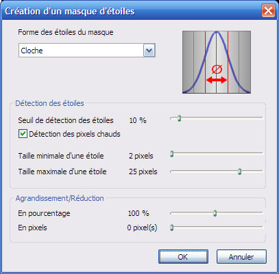 |
La liste des images
La
liste des images commune à l'enregistrement et à l'empilement contient la liste
de toutes les images utilisées lors des différents processus.
Elle contient :
- Les images
- Les darks
- Les flats
- Les bias/offsets
Seules les images cochées sont utilisées lors des processus
d'enregistrement et d'empilement.
Les colonnes affichées sont les suivantes :
| Case à cocher |
Indique si l'image va être utilisée lors
des différents processus |
| Chemin |
Nom du répertoire dans lequel se trouve
l'image |
| Fichier |
Nom du fichier |
| Type |
Type de l'image :
Image pour
les images
Dark pour les darks
Flat pour les flats
Bias pour
les offsets/bias |
| Score |
Scores des images obtenus après
l'enregistrement.
ou N/A pour les darks, flats et
offsets.
Lorsque le score est précédé de (*) cela
signifie que vous avez choisi cette image comme image de départ de
l'empilement à l'aide du menu contextuel. |
| dX |
Décalage en X (valeur en pixels) calculé pour
l'empilement |
| dY |
Décalage en Y (valeur en pixels) calculé
pour l'empilement |
| Angle |
Angle de rotation (valeur en °) calculé pour
l'empilement |
| Date/Heure |
Date et heure du fichier |
| Tailles |
Tailles en pixels de l'image (largeur x
hauteur) |
| CFA |
Indique si l'image résulte d'un Color
Filter Array (CFA) ce qui est le cas de toutes les images issues des
fichiers RAW utilisant une matrice de Bayer. |
| Profondeur |
Indique le type d'image (RGB ou monochrome) et le
nombre de bits par canal. |
| Infos |
Information complémentaire sur le type
d'image (RAW avec le type d'appareil photo, TIFF ou Autres) |
| ISO |
Sensibilité ISO de l'image |
| Temps de pose |
Temps de pose de l'image |
| FWHM |
FWHM : Full Width Half Maximum (largeur à la moitié
du maximum). (en pixel)
Il s'agit de la moyenne
pour toutes les étoiles détectées. |
| #Etoiles |
Nombre d'étoiles détectées.
Lorsque la position d'une comète a été fixée +(C) est
ajouté au nombre d'étoiles |
| Fond du ciel |
Valeur du fond du ciel pour les images
enregistrées en % |
Il est
possible de trier la liste sur n'importe quelle colonne en cliquant sur
l'en-tête de la colonne (et en cliquant une nouvelle fois pour inverser l'ordre
de tri).
La largeur et l'ordre
des colonnes peuvent être modifiés. Ces informations sont enregistrées après
chaque utilisation de DeepSkyStacker et lors de la session suivante la largeur
et la position de chaque colonne sont restaurés.
En sélectionnant une image dans la liste, celle-ci est
visualisée dans la zone de prévisualisation des images.
Si cette image correspond à un fichier RAW les paramètres
de développement des fichiers RAW sont utilisés dans le décodage de
l'image.
|
Il est possible de sélectionner plusieurs
fichiers dans la liste.
Un menu contextuel (bouton droit de la
souris) permet de sélectionner une image comme l'image de référence de la
pile, changer le type de chaque fichier (image, dark, flat ou
offset/bias), cocher/décocher les fichiers, les enlever de la liste et de
visualiser, éditer les propriétés des fichiers, copier le contenu de la
liste dans le presse-papier ou supprimer définitivement des fichiers du
disque.
|
Si
vous choisissez une image de référence qui n'est pas cochée, les
décalages seront calculés à partir de cette image de référence même
si celle-ci n'est pas empilée. |
|
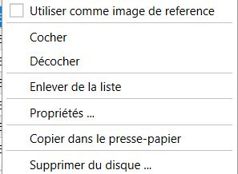
|
|
L'édition des propriétés permet en
particulier de modifier le type de l'image et surtout de forcer
temporairement (le temps de la session) la sensibilité ISO et le temps de
pose d'une ou plusieurs images.
Quand les sensibilités ISO et les temps de pose sont
modifiés, aucune modification n'est apportée aux fichiers contenant les
images. Les valeurs sont stockées en mémoire uniquement pour le temps de
la session courante. |
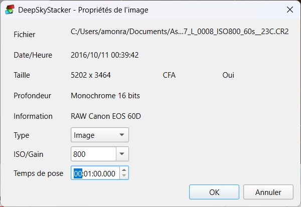 |
La
prévisualisation d'une image
La zone de prévisualisation des images permet
simplement et rapidement de visualiser soit une image de la liste (onglet
Enregistrement et Empilement), soit l'image en cours de traitement (onglet
Traitement).
Elle permet de
zoomer en avant et en arrière avec la molette de la souris. C'est le seul moyen
pour se déplacer et zoomer.
Edition de la position des étoiles et de la
comète
|
Quand
une image brute est sélectionnée dans la liste il est possible:
- d'éditer la position des étoiles: Les étoiles
détectées par DeepSkyStacker seront colorées en vert. Vous pouvez
sélectionner des étoiles supplémentaires ou désélectionner celles
détectées par DeepSkyStacker en cliquant avec le bouton gauche de la
souris.
- d'éditer la position de la comète
- créer et modifier un rectangle personnalisé
Vous
pouvez sélectionner l'un des modes ci-dessus en utilisant la barre
d'outils qui se trouve dans le coin en bas à droite de l'image.
Le dernier bouton de la
barre permet d'enregistrer les modifications apportées à la position des
étoiles et de la comète.
|
Note sur
l'édition de la comète :
Le centre de la
comète peut ne pas être détecté automatiquement par
DeepSkyStacker.
Pour forcer la comète à une
position donnée maintenez enfoncé la touche Majuscule pendant que
vous positionnez le centre de la
comète. |
|

|
|
De plus dans le cas de l'onglet Traitement
il est possible de sélectionner une portion de l'image (par un rectangle).
Ce rectangle est utilisé d'une part pour
appliquer les ajustements (niveaux RGB, luminosité, saturation) et d'autre
part optionnellement pour l'enregistrement.
Si aucun rectangle n'est défini, les
ajustements sont appliqués sur la totalité de l'image.
Dans tous les cas, lors de
l'enregistrement de l'image sur le disque les ajustements sont appliqués
sur la totalité de l'image enregistrée. |

|
Paramètres de développement
Le dialogue de
configuration des paramètres DDP donne accès à tous les paramètres utilisés lors
du développement d'un fichier image pour le transformer en image
couleur.
|
Réglage de l'image
(ou Ajustement des couleurs)
Les paramètres sont les
suivants :
-
La luminosité globale de l’image, appliquée au canal
vert.
-
La luminosité des canaux rouge et bleu par rapport au
canal vert.
Le réglage de l’image (ou Ajustement des couleurs)
est appliqué après la lecture et la mise à l’échelle de l’image en
fonction de son type (RAW, FITS ou TIFF), et après l’application de toutes
les images d’étalonnage. Si vous utilisez ces réglages, plus vous augmentez les
valeurs au-delà de la valeur par défaut de 1,0, plus les pixels seront
saturés.
Le réglage de la luminosité s’applique de manière égale
aux trois canaux. Les valeurs des facteurs d’échelle rouge et bleu sont relatives au canal vert, dont le facteur d’échelle
correspond à la valeur de
luminosité.
Pour
convertir des fichiers TIFF ou FITS 12 bits en 16 bits,
définissez une valeur de luminosité de 16.
Cette fonction peut également être utile pour régler la
balance des canaux des fichiers TIFF aux formats FITS ou CFA, conformément
à la documentation de votre appareil
photo. |
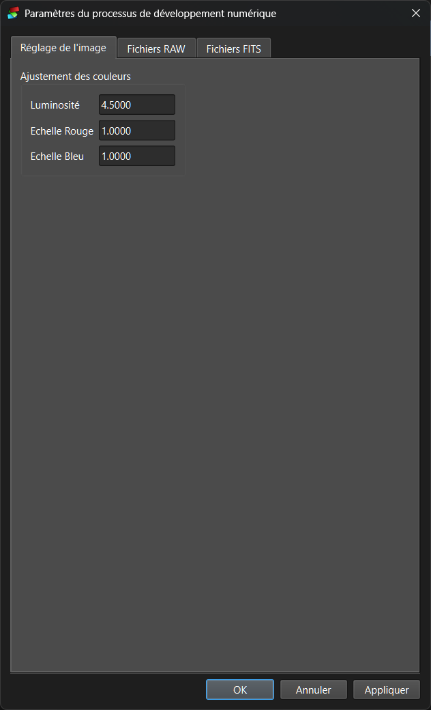 |
|
Fichiers RAW
Les
réglages disponibles concernent :
-
La balance des blancs
-
Le mode
d'interpolation
Par défaut, DeepSkyStacker utilise la balance des blancs
« Lumière du jour », sauf si l'option « Pas de traitement
de la balance des blancs » ou « Utiliser la balance des blancs
de l'appareil photo » est sélectionnée. Si vous choisissez « Pas de traitement de la
balance des blancs », aucun ajustement de la balance des blancs n'est
effectué, ce qui est recommandé si vous utilisez un logiciel comme
StarTools pour le post-traitement de vos images
empilées.
Dans la plupart des autres cas, nous vous recommandons
d'utiliser la balance des blancs « Lumière du
jour ».
L'option « Utiliser la balance des blancs
automatique » n'est plus prise en charge, car elle attribuait une
balance des blancs unique à chaque image, ce qui perturbait le traitement
des images sombres et des images plates. Toutefois, si vous souhaitez absolument utiliser la
balance des blancs automatique, configurez votre appareil photo en mode
automatique et sélectionnez « Utiliser la balance des blancs de
l'appareil photo ».
Les valeurs d'ajustement de la balance des blancs sont
extraites des fichiers RAW par LibRaw (Copyright © 2008-2019 LibRaw
LLC). LibRaw est basé sur le décodeur DCRaw original pour les
fichiers RAW, écrit par Dave
Coffin.
Des informations supplémentaires concernant le mode
d'interpolation et le comportement spécifique de l'optimisation de la
matrice de Bayer sont disponibles dans
le détails
techniques. |
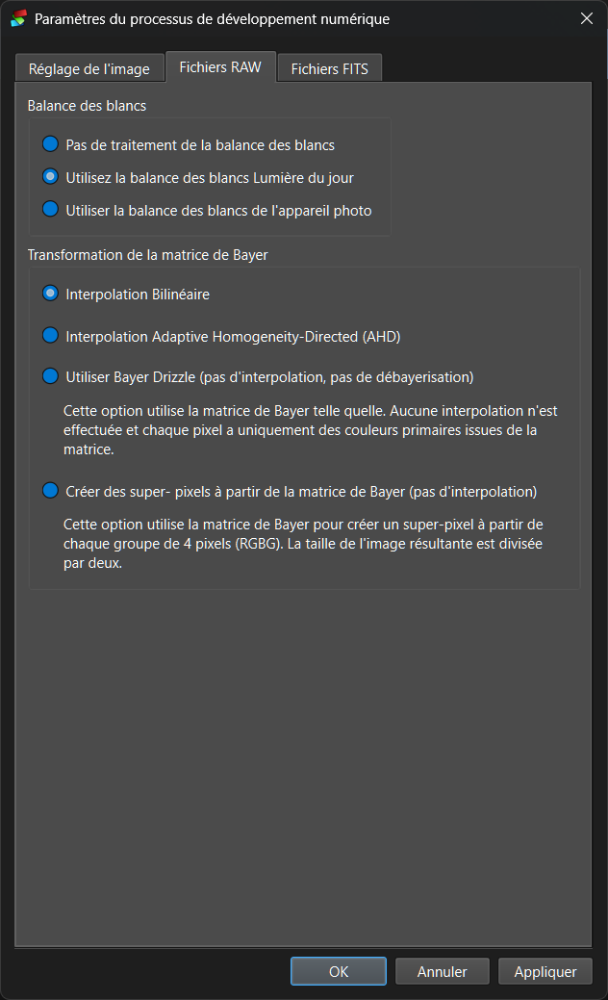 |
|
Fichiers FITS
Si la case « Les Fichiers FITS 16 bits à
plan … » n’est pas cochée,
DeepSkyStacker tentera de détecter automatiquement la matrice CFA à partir
des mots-clés FITS tels que BAYERPAT, COLORTYP et MOSAIC (pour les caméras
couleur Meade DSI). Si le fichier FITS ne contient pas ces mots-clés ou si le
motif spécifié est incorrect, vous pouvez cocher la case et choisir la
caméra et le motif à utiliser, comme dans les versions précédentes de
DeepSkyStacker.
La première étape consiste à sélectionner dans la liste le
reflex numérique (DSLR) ou la caméra CCD utilisée pour la prise de
vue. Cette étape est nécessaire pour utiliser le motif de
filtre de Bayer approprié, qui servira à décoder l’image et à la convertir
du noir et blanc à la couleur.
Les
paramètres contrôlent les valeurs utilisées pour :
Concernant les modes d'interpolation et le
fonctionnement particulier liés à l'optimisation de la matrice de Bayer,
vous aurez plus de détails en consultant les détails techniques. |
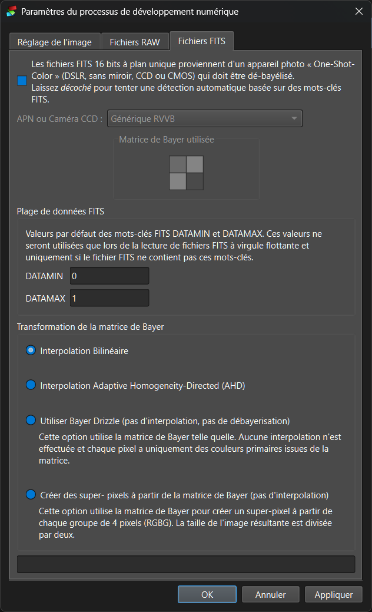 |